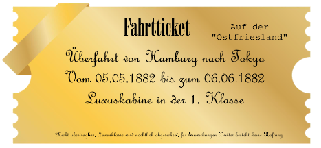

Kō kaijō no satsujin

| Datum: | 30.12.2024 |
|---|---|
| Spielleiter: | Julian |
| Teilnehmer: | Alexander Doppler | Marina Adamantidi | Michael Reichelt | Roger Zimmermann | Jules-Louis Poirot |
| Veranstaltungsort: | Casa Herrmann |
| Spielzeit: | Freitag 05.05. - Sonntag 07.05.1882 |
| Schauplätze: | Die Ostfriesland |
Prolog
Den Hinweisen von Hans Landgraf und den Inschriften auf der Zeitreiseuhr folgen, begeben sich die Helden mit Hilfe der Custodire Populum nach Japan. Dort dürfen sie als „O-yatoi gaikokujin“, Kontraktausländer, in das Land einreisen und dort bestimmten Tätigkeiten nachgehen. Dort sollen sie von dem Historiker und Geisterkenner Ludwig Riess in Empfang genommen werden. Mit Hilfe der „Deutschen Gesellschaft für Natur- und Völkerkunde Ostasiens“ können sie vielleicht mehr erfahren. Aber wie es sich gehört treffen sie dort auf merkwürdige Personen und fallen dort in die Klauen eines Mordfalles, welcher die Beziehungen zu Japan erheblich erschweren wird.
Hauptteil
Marina, Alexander und Friedrich machen sich auf den Weg um die Erkentnisse in den Berichten und Forschungsergebnissen rund um die Uhr der Zeit zu festigen. Und dafür müssen sie nach Japan. Da die Reise womöglich gefährlich wird, und guter Schutz vor Dämonen und Geistern rar ist, wird ihnen durch die Custodire Roger als bester Personenschützer zur Seite gestellt. So kommen sie an im Hafen von Hamburg an der angelegten Ostfriesland. Dort erwartet sie bereits eine zierliche und kleine Figur an dem Laufgang zur Luxusklasse. Es ist, wie angekündigt, die zugesandte japanische Auslandssekretärin Akane Watanabe, welche die Helden mit leicht gebrochenen Deutsch und vielen Verbeugungen in Empfang nimmt. Die vier verbeugen sich ebenfalls in rascher Folge und es kommt zu einem kurzen Kampf der tiefsten Verbeugung, den die Helden haben sich auf unterschiedliche Weise auf den kulturellen Austausch vorbereitet. Marina mit einem teueren Japanischkurs, Alexander und Friedrich mit dem Studium von Büchern über Kultur und Sprache, und Roger mit einem Bilderbuch zur Kommunikation.
Im Schiff angekommen geleitet sie Akane den steilen Laufgang nach obern zur Luxusklasse, während zwei Matrosen die Überzahl von Frauengepäck nachschleppen. Oben angekommen werden Alexander, Friedrich udn Roger von Prunk und GLittzer regelrecht beeindruckt. Die Luxusklasse hält was sie verspricht. Auf dem Unterdeck werden sie von sanftem Klavierspiel im großen Autitorium empfangen. Neben einem beheizten Schwimmbecken am offenen Vorderdeck gibt es auch eie Lounge und Spielzimmer, welcher an des Speisesaal andockt. Im Oberdeck sind neben einer weiteren kleinen Lounge alle Schlafzimmer, in unterschiedlicher Größe vorhanden. Von groß zu sehr groß. Kurz ausgeruht, und im Falle von Marina umgekleidet, bringt Akane die Helden zum Speißesaal zum Abendessen. Den Speisesaal betreten werden ihnen dort kurz einige Personen vorgestellt. Der Botschafter zu England Mori Arinori , sehr beschöftigt und zurück auf einer erfolglosen Reise nach London, der Detektiv Jules-Louis Poirot, gerade beim Ausmessen seiner gekochten Eier, sowie zwei weitere Personen. Die Fürstin Agnes Margarethe Steinmeier von Lichtenstein in einer Unterhaltung vertieft mit einer Gestalt, die zwei der Helden gut bekannt ist: Sir Charles of West Harborough and Suttings.
Dieser Mann ist der Besitzer der Berkshire Holdings und eines Konglomerats an Firmen und Fabriken in ganz Europa und Amerika. Neben seinem Geld ist seine Lieblingsbeschöftigung das Quälen von anderen, und so hat er bereits für Erfahrungen für Marina und Alexander gesorgt. So hat er das Geschäft der Adamantidis um den Bau von Kreuzfahrtschiffen unter der Nase weggeschnappt, den dieses Schiff hat seine eigene Werft gebaut. Und als ehemaliger Unterstützer und Geldgeber der Seilbahn in Lenggries hat er durch seinen plötzlichen Rückzieher fast Alexander und dem Grafen von Tölz wirklich Alles gekostet. Den dieser Stand kurz vor dem Ruin. Nur das Geld von Marina und ihrem Ehemann konnte das Projekt retten. Von den Folgen dieser Entscheidungen machte er vor Allem bei Marina liebend Gebrauch, und so auch hier brachte seine nasale und abwürdingende Stimme nur versteckte Beleidungen hervor. Dabei konnt er es nicht lassen auch Friedrich und Roger auf ihre individuellen Fehler und Schwächen aufmerksam machen, welche in der gesamten Gruppe zu einer spontanen und starken Abneigung führte. Zum Wohle aller verlas er bald den Saal, aber erst nachdem er auch den japanischen Botschafter noch einmal für seine erfolglose Reise beglückwünschte. Danach hellte die Stimmung direkt auf und durch außergewöhnlich leckeres, und auf persönlichen Wunsch, zubereitetes Essen und die Bekanntschaft mit Jules-Louis und Agnes wurde der Abend nicht zu einem Reinfall. Bis auf das japanische Tempura, welches mit Stäbchen gegessen werden sollte. Dieses landete eher selten in der Mündern der Helden. Nun gehen die meisten direkt zu Bett, Roger schläft mit einem offenen Auge und den Waffen im Anschlag und Maximilian. Ja, Maximilian war noch nie auf See und seinem Magen sieht man das an. Den dieser muss sich entleeren und nur ein Medikament kann diesen wieder bezwingen. Nur gut, dass er an der Bar ein Päckchen in braunem Papier erhält. Den es ist immer mindestens ein Bediensteter im Luxusabteil um für alle Nöte zu sorgen.
Nach der ersten Nacht gehen die Helden unterschiedlichen Beschäftigungen nach. Roger treibt seinen morgendlichen Sport und trifft dort auf den aktiven Jules. Später kommt Friedrich dazu um sich zu entspannen, den Sport ansehen ist immer noch einfacher als diesen selbst zu treiben. Doch als hier Charles in seinem gestreiften Schwimmanzug ankommt und Roger heftigst beleidigt und Friedrich absichtlich bewässert blühen die Gemüter ... nicht auf. Den sie sind eher amüsiert als verärgert. Was Charles zu weiteren Anstrengunen treibt. Währenddessen gibt sich Alexander dem Studium von Dämonen und Geistern hin und Marina versucht sich mit der Diplomatie von der Össtereicherin Agnes im Speisesaal. Später begeben sich Roger und Alexander auf eine Reise auf dem Schiff, den Roger muss das Schiff in und auswendig kennen um für Sicherheit zu sorgen. Und Alexander saugt alles auf wie ein Schwamm, jede Information ist kostbar.
So geht auch ein anderer Tag mit einer genüßlichen Mahlzeit zu Ende, wobei Jules-Louis immer klarer über seine Mitpassagiere bescheid weiß. Während wieder die meisten zu Bett gehen bleiben Maximilian und Marina zurück um sich ewtas dem tratsch und Alkohol hinzugeben. Wobei hier sich wieder Sir Charles einmischt und den Streit sucht. Hier trifft er auch wieder einen Nerv, doch bleibt dieser bei Marina unterdrückt. Spät zu Bett gehen die meisten zum Schlaf über, nur Roger bekommt kein Auge zu, etwas liegt im Busch. Und er hat Recht, den ein lauter Knall, und noch einer, und NOCH einer, erweckt die Helden nacheinander. Während die einen erst langsam aus dem Bett aussteigen ist Roger schon die Treppe hinunter gerast. Und hier wartet schon Jules, welcher sich nicht über die Ankunft des Schweizers wundert. Zusammen machen sie sich auf in Richtung der lauten Geräusche, wahrscheinlich aus einem der Hinterzimmer. Und von dort kommt auch der Barmann Heinrich und wird von den beiden aufgehalten. Zusammen öffnen sie die Türen zu dem Büro hinter der Bar und erblicken einen schrecklichen Anblick. Drei Tote in Lachen von Blut mit unterschiedlichsten Waffen und passenden Wunden dazu. Schnell lässt Jules den Bediensteten Heinrich Hilfe holen lassen. Wie sich herausstellt ein grober Fehler. Kaum ist Heinrich verschwunden kommen Alexander, Marina und Maximilian mit dazu und indentifizeren die Leichen. Der Botschafter Arinori, Sir Charles und die zweite Bedienstete des Abends, Maria Maler.
Schnell deduziert Jules die Situation durch einige gelenkte Blicke. Arinori wurde mit zwei Schüssen erschossen, doch er hat die Schusswaffe in der Hand. Sir Charles wurde mit einem Messer die Kehle durchgeschnitten, in der Hand von Maria. Selbst liegt neben ihm ein blutiges, güldenes Zepter welche zu den Wunden an Marias Kopf passt. In seinem Kopf bildet sich ein genauer Ablauf der Geschehnisse ab, doch dann entdeckt Marina etwas unter Sir Charles, obwohl das Berühren der leichen streng verboten war. Eine grüne schleimige Substanz, der Ursprung ungewiss, bricht die Konzentration von Jules und bringt selbst ihn zum stutzen. Noch nie hatte er so etas gesehen, doch die andern scheinen sich nur mit Blicken zu verständigen. Diese Morde waren garantiert nicht normal, doch wie soll man dies Jules-Louis schonend beibringen? Denn die Toten schaffen ein Bild in welchem selbst die Helden nicht unschuldig sind.
Weitere Untersuchungen zeigen ein immer verwirrerendes Bild für Jules, denn die Einschusslöcher der Waffe sind hinter Arinori obwohl die Waffe in seinen Händen liegt. Bei sich trug er nur ein Amulett mit dem Bild seiner Ehefrau, eher uninteressant. Doch die Papiere in seinen Taschen weisen auf mehr hin, denn diese und alle andern Unterlagen in diesem Raum ahndeln von den Verträgen zwischen England und Japan. Und es zeigt sich ein Bild, dass der jaoanische Botschafter England in die Ecke drücken könnte. Also was Sir Charles hier nicht unschuldig. Die Bedienste Maria hingegen hatte nur ein saubere Weinmesser, einen Schichtplan und etwas viel aufregenderes, eine Nachricht auf japanisch:
チ を は
ャ 殺 生
ー せ き
ル ば ら
ズ 子 れ
卿 供 る
Töte Sir Charles und deine Tochter lebt. Also hatte sie auch ein Motiv? Oder wurde sie von den japanern gezwungen? Sir Charles hingegen hatte nur ein Buch, welches die Japaner mit deren selbst geschönten Finanzen beschuldigen soll. Und von den Wunden her hat hier Maria Sir Charles getötet und dieser Maria. Aber Arinori hat sich selbst gerichtet und das mit zwei Schüßen? Hier ergab wirklich nichts mehr Sinn. Das Fenster nach außen wurde nicht geöffnet und ohne Hilfe konnte niemand in dieses bewachte Luxusabteil eindringen. Und was hatte es sich mit dieser glibberigen Flüssigkeit auf sich, änhlich zu der Götterspeiße zu Hause.
Wären diesen Gedanken handeln die Helden schon für sich selbst. Denn dieses Exkret war nicht natürlich und nach kurzer Analyse war es für Alexander klar, ein Mosnter treib sein UNwesen hier. Auf der Suche nach mehr findet man kleine Spuren hinter dem Salon und der Eingangshalle. bis hin zu dem Punkt, an dem Roger Heinrich gesehen hatte. Daneben unterschiedliceh blutige Spuren, barfuß und groß, dann beschuht und kleiner? Als ob diese nicht zu ein und der selben Person gehören würden. Unabhängig von Jules ermittelt man weiter, denn was würde es zu übernatürlichen Geschehnissen sagen? Dann könnte man sich gleich selbst einsperren lassen.
Und plötzlich wird es allen klar, Heinrich war bisher immer noch nicht aufgetaucht. Vor der Eingangstür sind aber Wachen, die müssen ihn gesehen haben. Gehört haben sie nichts, sonst wäre schon jetzt das halbe Schiff hier oben. Vorsichtig öffnet man die Tür und wird nur kurz erblickt von stämmigen Hühnen im seichten Schatten. Frägt man diese antwortet nur einer und das im gebrochenen Deutsch mnit russischem Akzent. "Heinrrich? Heinrrich warr hierr, da. Heinrrich nichts gesagt, aberr Heinrrich Guterr. Was, Kapitän holen? Ich gehe los, aberr Heinrich nichts gemacht." Also ein Mann der sich entwerder komplett verstellt oder alle sind in einer Liga. Auf jeden Fall war Heinrich nun untergetaucht und nun schwer zu finden. Der Kapitän muss dafür Abhilfe schaffen. Die letzte Person, welche in Frage kommen könnte ist Agnes, doch die Dame wurde verschlafen in ihrem Gemach aufgefunden, betröppelt von den vielen Fragen. Aber hellwach als es um Mord geht und direkt ängstlich als sie ihre Tür zur Sicherheit blitzschnell schließt. Es sieht so aus, dass sie es auch nicht war. Obwohl eine der Tatwaffen, das Zepter welches Maria erschlug, aus ihrem Schmuckfundus stammt. Aber auch die Schusswaffe wurde bei Roger entwendet. Es gibt keine Unschuldigen, zumindest soweit kann niemand beweisen er hätte keinen Anteil an der Tat.
Doch bewiesen ist noch nichts und daher muss nach Heinrich gesucht werden. Und so trifft auch der Kapitän der Ostfriesland, Gunbald Karlos auf dem Oberdeck ein. Mord auf seinem Schiff! Unfasbar und ungeheuerlich. Auf Bitten von Jules werden alle Möglichkeiten der Flucht geschlossen und die Besatzung wird in Alermbereitschaft versetzt. Doch eine direkte Personsuche ist nich nach der Meinung des Kapitäns, erst wieder am Morgen, so dass nicht zu viel Aufmerksamkeit erzeugt wird. Und dieser Meinung muss sich gebeugt werden, denn einen Schiffskapitän kann niemand auf seinem eigenen Gefährt überstimmen. Aber er scheint auf Jules zu hören und daher will er auch helfen so gut es geht. Und so soll und kann niemand das Schiff verlassen, nicht ohne dabei bemerkt zu werden. Und man ist einige Kilometer vom Festland entfernt, so weit im kalten Meereswasser zu schwimmen wäre eine rieisige Herausforderung selbst für den härtesten Mann.
Und so geht die Suche weiter und die Füsse und Schugrößen der Angestellten werden von Jules untersucht, denn nach seinen Funden kann es auch ein weiterer Täter gewesen sein, in einer Liga mit Heinrich. Selbst die genaue Sekretärin Müller gibt sich dieser leichten Erniedrigung hin. Aber ihre Fehler in dem Schichtplan dementiert sie streng. Denn Fehler macht sie keine. Was für ein Fehler? Laut dem Plan sollte am Sonntag Openkopp arbeiten, doch dieser hat Geburstag, also frei. Aber da kein Fehler passiert ist, muss etwas merkwürdiges passiert sein. Auch trifft eine trauernde Akane ein, aufgelöst und hilflos. Nur mit der Unterstützung von Marina bleibt sie bei Bewusstsein. Als sie den Leichnam des Botschafters erblickt kommen in ihr Gefühle aller Art auf, nciht nur Trauer sondern auch Sorge und Angst. Dieser Tod wird viele Folgen für Japan haben, vor allem wenn er unaufgeklärt bleibt. Den Anhänger von Arinori in der Hand fällt ihr aber schnell auch hier eine Ungenauigkeit auf. Das Foto im Inneren des Schmucks sollte nicht seine Ehefrau sein, die beiden haben sich schon lange auseinander gelebt. Sondern seine Mätresse und alle wundern weiter. Bis Maximilian auf den springenden Punkt kommt. Alle Indizien deuten auf einen Punkt hin: Gestaltwandler!
Und was kann Gestaltwandler schlagen? Silber, weiß Roger genau, selbst eine kleinste Menge. Eine seiner Patronen aus der Tasche genommen testet er alle Leichen. Arinori zeigt keine Änderungen, so auch Maria. Aber bei Charles angekommen verwandelt dieser sich bei jeder berührten Stelle wieder zurück in seinen Ursprung. Der tote Heinrich liegt vor ihnen, keine Spur von Sir Charles. Er muss also der gesuchte Mörder sein. Gerade noch in Gedanken über die nächsten Schritte werden sie von hinten durch Jules überrascht. Doch was noch mehr überrascht ist, dass er nicht ausflippt oder beschuldigt, sondern gespannt und wissbegierig das geschehen begutachtet. Nach kurzer Erklärung und ohne Überzeugung ist ihm auch klar was vor sich ging. Denn wer so etwas mit den eigenen Augen sieht braucht kein Wundern mehr.
Epilog
So ist nun einiges klar. Sir Charles ist unter den Gästen oder Tieren an Bord und kann sich nur begrenz verstecken. Der Kapitän muss zur Untersuchung eifnach zustimmen, doch den veradcht auf ein Monster muss man umgehen. Also muss jedes große Lebewesen getestet werden und alle Ausgänge geschlossen sein. Wird Sir Charles nicht gefunden so kann der Mord nicht aufgeklärt werden und schlimme Folgen werden sich für alle japanischen Gäste ergeben. Es steht mehr auf dem Spiel als den Helden bisher bekannt ist.
Inventar
- Schleim eines Gestaltwandlers
Trivia
- Am meisten Erfolg mit dem japanischen hat der, welcher nur ein Bilderbuch hat
- Die Helden sind das Essen mit Stäbchen in keinster Weise gewohnt
- Maximilian hat Probleme sein Essen auf See im Magen zu halten
- Roger bekommt sein schweizerisches Essen um jeden Preis und wi er es will
- Jules ist sich sicher, der Bedienstete Heinrich kann es nicht gewesen sein
- Die Sekretärin Müller hat für ihr Alter wunderschöne Beine